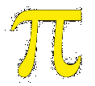

|  |
Every good math student knows that pi is an irrational and transcendental real number and defined as the ratio of the circumference of a circle to its diameter. You can find all that information in any good math book.
Now, WTM is going to introduce a new idea: pi words!
Definition: a "pi word" (hereafter denoted "PW") is simply any word that contains the letters "p" and "i", appearing in that order. The letters may be consecutive or separated (see below). A PW may occur in any language that has those two letters.
PW's come in various types or categories.
Type I: the letters "p" and "i" are the first two letters of the word. Any dictionary can quickly provide an ample list of such PW's. Here are just a few examples:
pig, pip, pint, pilot, piece, pinch, pierce, pinecone, etc.
Type II: the letter "p" is the first letter, but the "i" occurs later in the word. Examples include:
pain, prime, panic, paint, point, pallid, paradise, promise, etc.
Type III: here the letters "p" and "i" are consecutive again, but they appear within the word. Examples include:
opium, shaping, compile, aspire, conspire, empire, spindle, despite, etc.
Type IV: now the two letters are within the word, but they are separated by one or more other letters, somewhat as was done in Type II. Examples include:
composite, explain, expression, assumption, hyperbolic, separating, spacing, operation, etc.
By now, you may be wondering why we did not include such examples as "pineapple" (Type I), or "probability" (Type II), or "opinion" (Type III), or "opportunity" (Type IV). But upon closer examination, the reader should observe that these latter four examples have a "flaw" of sorts contained in them. Do you see it?
We admit it's a little hard, but notice: all the examples given in the four lists above contain only one letter "p" and one letter "i" in the word. The four cases given just above contain more than one of either letter! So they are not to be considered as "pure PW's". Perhaps they deserve their own subcategory designation, as in Type I-x (the "x" could signify "extra").
I admit to now becoming more aware of just how many PW's there are in English. They're literally all over the place. Why I've even found a couple that start with "p" and end with "i". (If you can find my pair, or others that are new to me, send them to me. I'll post them on this page with your name as the discoverer.)
We have even found some interesting words that perhaps deserve their own special category. One example is:: peripatetic. Written in this form – PerIPatetIc – we see that it contains two of each letter, and in P-I-P-I order. We would like to call it a PI-PI Word. Okay?
I hear you now asking: "Where's the math in all this?" We offer the following as our answer.
First, this activity increases student awareness of the number pi in general. And does it through the field of language arts, thus complying with NCTM Standards of making connections between math and other school subjects. Compiling long lists of PW's of the four types increases a student's vocabulary and spelling skills. Geography might even be included by looking for PW's on a map. Then there are groups like Plants & Animals, Food, and so on. Let your creativity soar!
Next, once a nice list has been prepared, real math of a numerical style can begin by playing the game WORDSWORTH. Activities such as these can be pursued, depending on the mathematical level of the individual:
[4.367] = 4 [72.61] = 72 [0.851] = 0 [pi] = 3 etc.
So now we can search for PW's whose numerical values are
[10pi] = 31 [100pi] = 314 [20pi] = 62 etc.
The first case (31) provides a distinct, perhaps impossible, challenge. The numerical value of every PW is greater than or equal to 25 (p = 16 and i = 9, so 16 + 9 = 25). Therefore, any PW with 3 letters must use the letter "f", and "pif" is not a proper word in the dictionary. However, if we take the PW's of pie and pig, and calculate the arithmetic mean of their values, we do get 31 after all.
The second case (314) is quite the opposite. As 314 divided by 26 (the value for z) is in excess of 12, any PW with that value must have a lot of letters. At present, we do not know of any word that has that value. Perhaps you, dear reader, could find one and send it to us? We would then announce your great discovery on this page. On the other hand, we could possibly just change the problem, letting 2, 3, or more PW's to be added together to make 314. Ideally, the words should have a common theme, but that's not absolutely required.
When we use other multiples of pi, the possibilities of success increase. And all the while, the student is becoming more familiar with an important symbol of math notation, not to mention a little more practice in multiplication.
Speaking of math symbols and notation, this would seem to be an appropriate moment to introduce some more. It will facilitate our discussion of results for a PW's numerical value, and simultaneously teach "function" notation, a basic topic in all math courses from Algebra I and up. So we propose the following symbolism:
This simply means: the numerical value of a particular PW is equal to the integer n.
An example will make this clear.
because P + I + G = 16 + 9 + 7 = 32.
And that's all there is to it. Easy, huh?
[N.B. 32 = 25. If we pretend that the exponent "5" grows "fat as a pig" and then falls down to the line beside the "2", forming the two-digit number "25", we have the "square" of our original exponent.]
Here's another idea that can add some variety to our topic, not to mention more results in which we can look for interesting results and patterns. Let's merely reverse the value of our letters! This simply means:
So now the numerical value of "pig" becomes P + I + G = 11 + 18 + 20 = 49.
Of course, we'll need to adapt our function notation to indicate in which order we're counting the letters. We've decided that the follow manner should suffice:
Notice the little apostrophe mark " ' " next to the symbol " # ". That's called a "prime" mark in mathematics. (I caution you, however, it has nothing to do with "prime numbers".) Therefore, we can now write the following:
[N. B. 49 = 72. So while #(pig) equals a power of 2, #'(pig) equals the square of 7.]
This new notation now permits us to form algebraic statements such as
Can you find a PW that satisfies this relationship?
While playing with this concept, I realized that once I had calculated #(PW) for a given word, there was a neat short-cut to find #'(PW) without resorting to the second alphabet counting system and doing more laborious addition work. I could develop a simple, time-saving formula to find either of those values once I had calculated the other. Can you find that formula, and send it to me?
Here's a tip; it starts out like so:
Now, the rest is up to you.
Another alphabetical numbering system
Here is yet another way to assign numerical values to the letters of the alphabet. Observe the following chart, and I think it will be virtually self-explanatory to you.
| 1 | 2 | 3 | 4 | 5 | 6 | 7 | 8 | 9 |
| A | B | C | D | E | F | G | H | I |
| J | K | L | M | N | O | P | Q | R |
| S | T | U | V | W | X | Y | Z | - |
Since this is is rather a "cyclic" arrangement of the alphabet in relation to the numbers 1 to 9, we've decided to use the following function notation for this case:
Returning to our practice word of "pig", we have:
As before, we can easily prove it: P + I + G = 7 + 9 + 7 = 23.
[N.B. This time our result is the unique prime "23", a concatenation of our first two primes, "2" and "3". And "23" is the reversed form of our first result of "32" above.]
And putting all three systems together, we have the following mathematical statement:
What this will do for the betterment of the world of mankind, I have no idea. But it's certainly a little piece of Truth.
Finally, we may be coming to the end of the material presented on this page until we hear from you, the reading public, who will hopefully start sending me your own reactions. So we present our last item regarding Pi Words.
Two very popular parts of pi recreations are: (1) memorizing large numbers of digits of the decimal form of pi (to hundreds, even thousands of digits) or (2) writing prose passages or poetry in which the number of letters in each word correspond to successive digits in pi. The former activity is usually rather straightforward, but the latter style is, in my opinion, much more difficult to do. It even has a special name; it's called constrained writing. When done well, it produces some very interesting results, ranging all the way from the humorous and ridiculous to the sublime and elegant. There are many websites that contain more information about these two types of activities.
One of the famous humorous phrases says:
How I want a drink, alcoholic of course, after the heavy lectures involving quantum mechanics. All of thy geometry, Herr Plank, is fairly hard...
For those who want to check each word-length, here are the necessary digits of pi to do so:
But to see a very elegant poem, go to Liz's Pi Poems.
So what do I have to offer in this fascinating field of recreational mathematics about pi ? Let me show you.
As you have undoubtedly read all, or most, of the material above, you know that we're talking about pi words here, right? Then, look at my first attempt at constrained writing:
3 --> I eat pizza
1 --> pie
4 --> when I'm in Pittsburgh,
1 --> Pennsylvania
5 --> because when I'm there partaking
9 --> of my favorite form of baked food, I promise
2 --> to purify
6 --> my dietary habits before I expire.
Do you see the pattern? Each line contains the number of words corresponding to the digits of pi , AND each line ends with a PW. Notice that in this example all pi words are pure PW's.
Well, maybe it's not the greatest gimmick for pi lore, but I like it. Can you make up one of your own, using more digits of pi ? Be careful! When a zero (0) appears, that means a break must occur. That means that the PW just before the "0-line" must be the finish of a thought, and the line that follows must be the beginning of a new sentence.
I really hope that someone with more talent than I possess at constrained writing will compose something like this and send it to me. I'd love to post it on my page.
(okay, I'm waiting...)
Email at ttrotter@telesal.net or ttrotter3@yahoo.com
| Comments? Send e-mail. | Back to top | Go back to Home Page | Go back to Contents |